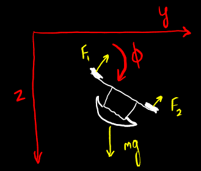
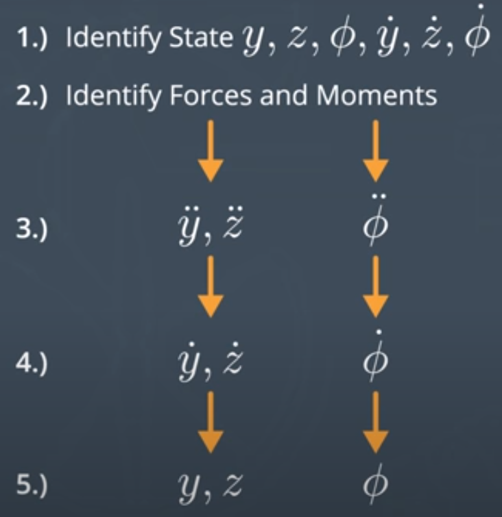

We'll follow the steps for solving a control problem stated
here; i.e. first, model the dynamics of a 3D quadrotor and
then solve the 3D control problem.
Review of 2D dynamics


2D dynamics
We started by defining a state for the vehicle
The state describes the minimal amount of information we need to
keep around to be able to predict the motion of the vehicle from one time step
to the next. For 2D, the state variables were the vehicle's lateral y-position,
vertical z-position, and roll angle, $\phi$. We also had to track the velocities
associated with each of those variables, which gave us a total of six state variables.
Next, we had to figure out the forces and moments acting on the vehicle
Then we had to convert these forces and moments into accelerations and angular
accelerations, which we did by applying $f = m*a$, and its rotational equivalent
Once we knew the accelerations and angular accelerations, we had to integrate
once to figure out how these caused the $y$, $z$, and $\phi$ velocities to change
Then we integrated the updated velocities to figure out how the positions changed